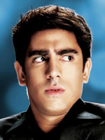
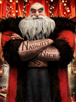
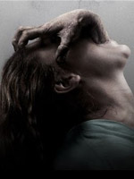
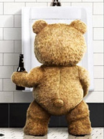

O nosso objetivo é informar ao cliente, sem que ele precise sair de casa, os filmes em cartaz em sua cidade, o valor cobrado, em quais cinemas estão disponíveis e seus horários.
Os horários e preços podem ser alterados sem aviso prévio. Qualquer mudança é de responsabilidade dos cinemas.
Os Penetras

Gênero:
Comédia
Direção:
Andrucha Waddington
Com:
Mariana Ximenes, Caio Junqueira, Susana Vieira, Andrea Beltrão, Marcelo Adnet
Duração:
96 minutos
Classificação:
?
14 anos
Brasil, 2012
Às vésperas do réveillon, o apaixonado Beto chega ao Rio de Janeiro à procura de Laura. Desprezado, tenta o suicídio, mas é salvo pelo golpista Marco Polo que, a fim de ganhar um dinheiro fácil, promete ajudá-lo a reconquistar a amada. O que esse malandro não poderia imaginar é que também se apaixonaria por Laura, uma jovem sedutora que usa artifícios para circular pelas altas rodas da sociedade carioca. Em busca de amor, dinheiro e aventura, Marco e Beto vão penetrar nas festas mais quentes da cidade, usando muita esperteza e uma boa dose de loucura
Villàggio 1
DIARIAMENTE: 14h, 16h, 18h, 20h, 22h
Esplanada 5
SEX / SAB / DOM / SEG / QUA: 14h, 16h, 18h, 20h, 22h
TER / QUI: 17h, 19h, 21h30
Sorocaba 7
DIARIAMENTE: 15h, 17h, 19h45, 21h30
A Origem dos Guardiões

Gênero:
Animação
Direção:
Peter Ramsey
Duração:
97 minutos
Classificação:
Livre
EUA, 2012
Quando o espírito maligno Pitch decide dominar o mundo, os guardiões imortais decidem se reunir para proteger, com seus poderes extraordinários, as crenças das crianças do mundo inteiro. Liderados pelo Papai Noel, o grupo é também formado pela Fada do Dente, Jack Frost, Coelho da Páscoa e Sandman.
Villàggio 4
[LEG]
DIARIAMENTE: 21h50
Villàggio 4
[DUB]
DIARIAMENTE: 13h50, 15h50, 17h50, 19h50
Esplanada 1 3D
[DUB]
SEX / SAB / DOM / SEG / QUA: 15h, 17h, 19h, 21h
TER / QUI: 16h30, 18h30, 20h45
Esplanada 4
[DUB]
SEX / SAB / DOM / SEG / QUA: 14h15, 16h15
TER / QUI: 16h, 18h
Sorocaba 2 3D
[DUB]
SEX / SAB / DOM / QUA / QUI: 14h45, 17h, 19h, 21h
SEG / TER: 14h30, 18h, 20h
Sorocaba 4
[DUB]
SEX / SAB / DOM / QUA / QUI: 14h, 16h, 18h, 20h
SEG / TER: 14h, 16h, 20h
A Saga Crepúsculo: Amanhecer – Parte 2
Gênero:
Drama
Direção:
Billl Condon
Duração:
117 minutos
Com:
Kristen Stewart, Dakota Fanning, Robert Pattinson, Taylor Lautner
Classificação:
14 anos
EUA, 2012
Depois do nascimento de Renesmee, filha de Bella Swan e Edward Cullen, os Cullen se reúnem a outros clãs de vampiros para proteger a criança dos Volturi.
Villàggio 2
[LEG]
DIARIAMENTE: 14h10, 16h40, 19h10, 21h40
Villàggio 3
[DUB]
DIARIAMENTE: 13h50, 16h20, 18h50, 21h20
Esplanada 2
[LEG]
SEX / SAB / DOM / SEG / QUA: 21h30
TER / QUI: 21h
Esplanada 2
[DUB]
SEX / SAB / DOM / SEG / QUA: 14h45, 17h, 19h15
TER / QUI: 16h, 18h30
Esplanada 3
[DUB]
SEX / SAB / DOM / SEG / QUA: 15h, 17h15, 19h30, 21h45
TER / QUI: 16h30, 19h, 21h30
Esplanada 4
[DUB]
SEX / SAB / DOM / SEG / QUA: 18h15, 20h30
TER / QUI: 20h15
Sorocaba 1
[DUB]
SEX / SAB / DOM / QUA / QUI: 14h15, 16h45, 19h15, 21h45
SEG / TER: 14h, 17h, 20h30
Sorocaba 5
[DUB]
SEX / SAB / DOM / QUA / QUI: 14h30, 17h, 19h30, 22h
SEG / TER: 15h, 18h, 21h
Sorocaba 6
[DUB]
SEX / SAB / DOM / QUA / QUI: 14h, 16h30, 20h, 22h10
SEG / TER: 16h, 19h, 22h
Panorâmico 1
[DUB]
DIARIAMENTE: 15h, 17h30, 20h
O Mar Não Está Pra Peixe: Tubarões à Vista
Gênero:
Animação
Direção:
Mark A. Z. Dippé
Duração:
88 minutos
Classificação:
Livre
EUA, 2012
Treinado nas artes dos ancestrais poderes aquáticos, o peixinho Pê agora pode facilmente derrotar um tubarão com as próprias nadadeiras. Quando um grupo de tubarões famintos declara o fim daquela região. Pê decide treinar um grupo de bravos companheiros (além do próprio filho) para combater esta ameaça cheia de dentes.
Panorâmico 2
[DUB]
DIARIAMENTE: 14h30
Possessão

Gênero:
Terror
Direção:
Ole Bornedal
Com:
Natasha Calis, Jeffrey Dean Morgan, Kyra Sedgwick, Jay Brazeau
Duração:
102 minutos
Classificação:
12 anos
EUA, 2012
Uma jovem compra uma caixa antiga sem saber que dentro do objeto existe um espírito malicioso. Os pais da menina tentam encontrar uma maneira de acabar com a maldição que domina sua filha.
Sorocaba 8
[DUB]
DIARIAMENTE: 16h, 18h, 20h
Ted

Gênero:
Comédia
Direção:
Seth MacFarlane
Com:
Mila Kunis, Mark Wahlberg, Giovanni Ribisi, Jessica Stroup, Patrick Warburton
Duração:
109 minutos
Classificação:
?
16 anos
EUA, 2012
Em um Natal, o ursinho de pelúcia de John Bennett ganha vida. Os dois crescem juntos e, já adulto, ele deve escolher entre ficar com sua namorada Lori Collins ou manter sua amizade com o urso Ted.
Sorocaba 3
[DUB]
DIARIAMENTE: 19h30, 21h30
Panorâmico 2
[DUB]
DIARIAMENTE: 18h30, 20h30
Preços
Cinespaço – Villàggio Shopping
Telefone: 15 3219.6900
Endereço: Praça Pio XII, 65 – Santa Rosália
Site: cinespaco.com.br
Salas: 1, 2 e 3
SEX / SAB / DOM / FERIADO: R$18,00 (inteira) – R$9,00 (meia)
SEG / TER /QUI: R$12,00 (inteira) – R$6,00 (meia)
QUA: R$8,00 (todos pagam meia)
Sala: 4 (3D)
SEX / SAB / DOM / FERIADO: R$20,00 (inteira) – R$10,00 (meia)
SEG / TER /QUI: R$14,00 (inteira) – R$7,00 (meia)
QUA: R$10,00 (todos pagam meia)
Multiplex – Esplanada Shopping
Telefone: 15 3233.6989
Endereço: Av. Izoraida Marques Peres, 401 – Campolim
Site: esplanadashopping.com.br/cinema.asp
Salas: 1, 3, 4 e 5
SEX / SAB / DOM / FERIADO: Matinê – R$15,00 (inteira) – R$7,50 (meia) / Noite – R$17,00 (inteira) – R$8,50 (meia)
TER / QUI: R$13,00 (inteira) – R$6,50 (meia)
SEG / QUA: R$8,00 (todos pagam meia)
Sala: 2 (3D)
SEX / SAB / DOM / FERIADO: Matinê – R$18,00 (inteira) – R$9,00 (meia) / Noite – R$20,00 (inteira) – R$10,00 (meia)
TER / QUI: R$16,00 (inteira) – R$8,00 (meia)
SEG / QUA: R$10,00 (todos pagam meia)
Cineplay – Sorocaba Shopping
Telefone: 15 3232.2757
Endereço: Av. Afonso Vergueiro, 1700/1766 – Centro
Site: sorocabashopping.com/cinema.html
Salas: 1, 2, 3, 4 e 5 (3D)
SEX / SAB / DOM / FERIADO: R$18,00 (inteira) – R$9,00 (meia)
SEG / TER: R$16,00 (inteira) – R$8,00 (meia)
QUA / QUI: R$9,00 (todos pagam meia)
Salas: 6, 7 e 8
SEX / SAB / DOM / FERIADO: R$14,00 (inteira) – R$7,00 (meia)
SEG / TER: R$12,00 (inteira) – R$6,00 (meia)
QUA / QUI: R$7,00 (todos pagam meia)
Cineplay – Shopping Panorâmico
Telefone: 15 3231.6917
Endereço: Rodovia Raposo Tavares, km 99,5
Salas: 1 e 2
SEX / SAB / DOM / FERIADO: R$12,00 (inteira) – R$6,00 (meia)
SEG / TER: R$10,00 (inteira) – R$5,00 (meia)
QUA / QUI: R$6,00 (todos pagam meia)